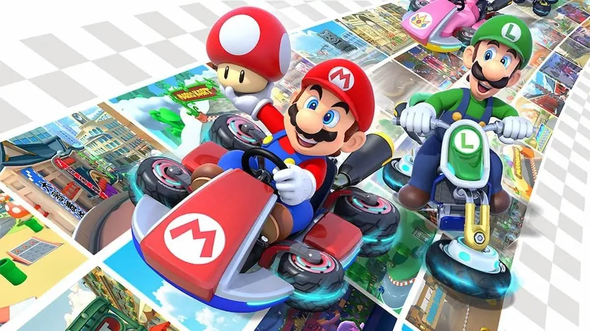
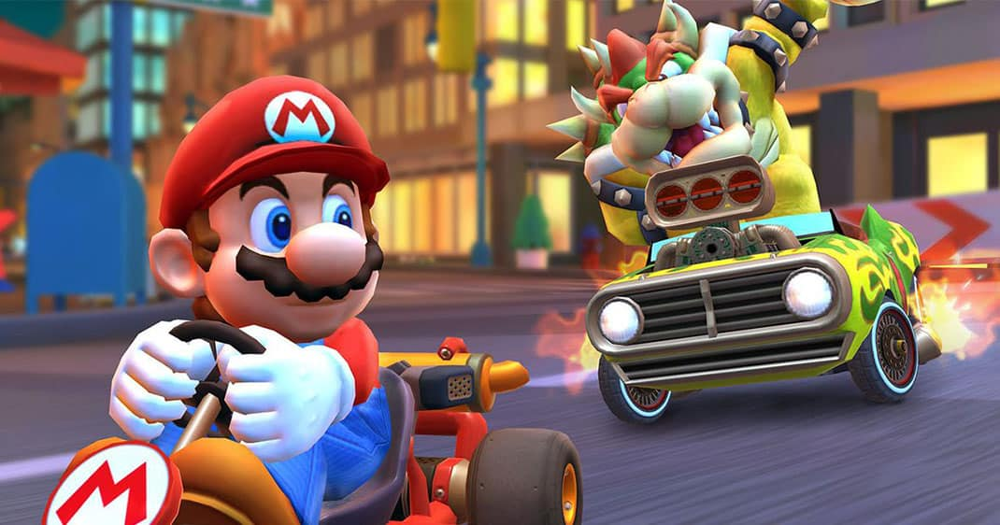

¡Acelera a través de las pistas del Reino Champiñón bajo el agua, en el cielo, de cabeza y sin gravedad, y llega a la meta para obtener la victoria! Prepara motores en el modo multijugador local*, en los torneos en línea** del juego, en el modo batalla que ha sido mejorado ¡y más!
¡Descubre lo nuevo de Mario Kart™ 8 Deluxe y juega con nuevos personajes como Inkling chica e Inkling chico! Podrás elegir sus karts inspirados en el juego Splatoon en Parque Viaducto para el modo batalla. También hay objetos que están de regreso, como Boo, el fantasma que roba objetos, y la pluma, que se usa en el modo batalla, ¡y ahora podrás llevar dos objetos a la vez! Demuéstrale al mundo que eres el mejor en los torneos en línea o compite con tus amigos a través de internet. Con tantas opciones de control y el modo portátil, ¡siempre habrá una nueva manera de jugar en la consola Nintendo Switch™!
